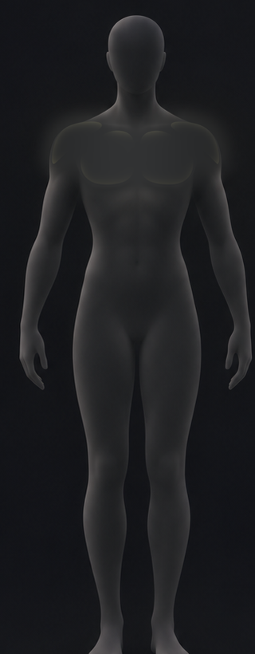
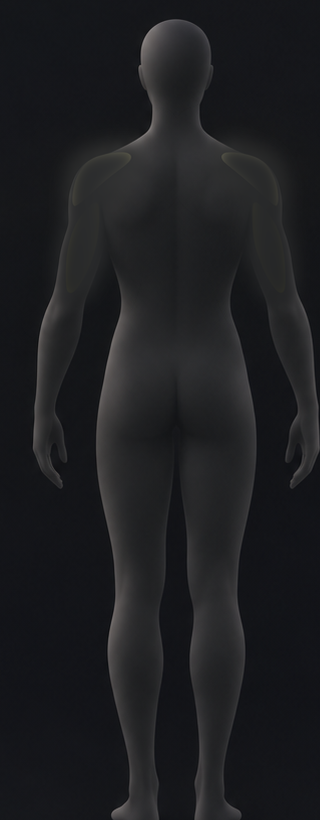

Bloom · BVA-0087 / 0088 / 0089 · Unified design handoff
Where did you notice it?
Select a location on the front or back of the body. Rings represent illustrative user-reported severity only; count pills represent example observations. A hollow locus means recorded but unrated. No anatomical or clinical conclusion is inferred.
Anterior · BVA-0087

Posterior · BVA-0088

Provisional locations: 23 front + 26 back. BVA-0089 marker grammar approved; front/back location identifiers remain provisional. Production integration, canonical region review, and real-device accessibility checks remain gated.